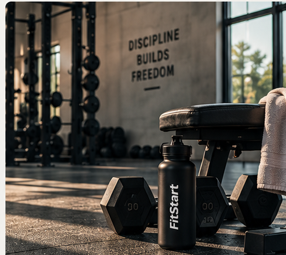
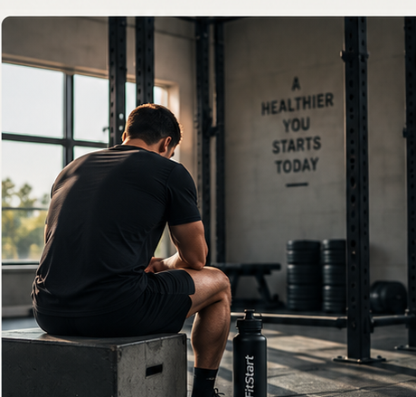

Simple workouts, nutrition tips, and beginner-friendly guidance to help you build healthy habits.
Get Started →
Easy routines designed to help you build strength and confidence.
Learn the basics of balanced meals without making it complicated.
Practical advice to help you stay consistent and make progress.

Getting started with fitness can feel confusing. FitStart keeps it simple with beginner-friendly workouts, easy nutrition advice, and practical tips you can actually stick with.